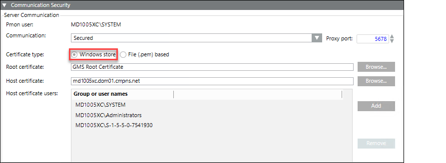

Modify the Certificate Type using the Communication Security Expander
- The Windows store certificates are imported in the appropriate Windows Certificate store.
The file (.pem) based certificates are available on the disk.
The Host certificate (Windows store/File (.pem) based) is created using the root certificate provided in the Root certificate field.
The Host certificate must have a private key and it must be exportable. - For a Server project, you modified the default Server Communication mode Stand-alone to Secured, and the options for Certificate type are enabled.
- From the Communication Security expander, select File (.pem) based to change the default Windows Store.
- Depending on the selected Certificate type, the following fields are added along with the default set certificates, if any.
For Windows store, the default Root certificate and Host certificate display. The Host certificate users list display the default host certificates users including the SYSTEM user, Administrators user group.
For File (.pem) based, in addition to the Root certificate and Host certificate fields, the Host key field displays. - To configure the default Certificate type, Windows store, proceed as follows. Otherwise go to step 4 when you change the default Certificate type to configure the file (.pem) based option.
a. Click Browse for the root/host certificate to change the default set certificates.
b. In the Select Certificate dialog box, select a store location, either Local machine certificates (for SMC created) or User certificates (for commercial certificate).
c. Select a certificate from the list of available certificates.
d. Click OK.
e. (Optional) Verify the certificate details using Preview. - The root/host certificates are configured.
- For the Windows store option, to add the host certificate users proceed as follows.
a. Click Add to add the host certificate users using the Select User dialog box.
b. (Optional) Select a domain to change the default, Current Station.
c. Enter a user name or user account.
d. Click Check Name to locate all matching or similar object names.
e. Select the user name that displays in the list.
f. Click OK. - The host certificate user is added to the list of Host certificate users.
NOTE: For launching the Installed Client on the Client/FEP station, you must add the Client/FEP logged in user as well as the Client/FEP project’s Pmon user, to the list of Host certificate users, which in turn provide access rights on the host certificate's private key. This must be the same user who has rights on the configured Server project folder and its subfolders. - If you select the File (.pem) based option, do the following:
a. Click Browse for the root/host certificate to open the Windows Open dialog box.
b. Locate and select the root certificate from the disk.
c. Locate and select the host certificate from the disk. The selected host certificate must have a private key and it must be exportable.
d. Locate and select the host certificate key from the disk. - Click Save
 .
.
- The certificate types along with the root and host certificates are configured for the selected certificate type.
